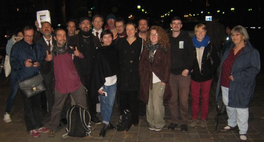

| |
Site dédié à la publication d'informations communiquées par le Collectif des déboulonneurs. En aucun cas ce site n'appelle à des actions illégales. | |
 |
||
|
Accueil du site > Paris > [Paris] Procès de 7 déboulonneurs 11 octobre 2016
Compte-rendu du procès de 7 militants du collectif des Déboulonneurs Paris, le mardi 11 octobre 201610e procès à Paris, 22e procès au niveau nationalCommuniqué de presse, Paris, 12 octobre 20167 militants du collectif des Déboulonneurs ont comparu au Tribunal de grande instance de Paris ce mardi 11 octobre 2016 pour “groupement en vue de préparer des dégradations de biens »[1] et “dégradation de panneaux publicitaires”[2]. Le 2 mai 2015, gare de Lyon à Paris, 5 barbouilleurs avaient écrit sur des écrans publicitaires dans le hall de la gare les messages « liberté de réception », « agression visuelle », « la pub tue », « la pub pollue nos rêves », « pub = danger de mort », « la pub n’est pas charlie », « attention à la pub en descendant du train », 1 militant expliquait l’action non-violente en cours et la nocivité de la publicité au mégaphone, 1 autre militant avait mis des tracts sur un écran. L’interpellation avait donné lieu à une convocation au commissariat quelques jours plus tard pour être entendus. La procureure de la République a demandé une requalification du chef d’inculpation de dégradation de biens en tag, soit le fait de tracer des inscriptions[3], et en contravention de 5e classe pour l’apposition de tract. La procureure requiert : 300 € d’amende pour avoir tracé des inscriptions pour chacun des 5 barbouilleurs, 250 € d’amende pour avoir participé à un groupement en vue de préparer des dégradations et 50 € de contravention pour le militant ayant posé des tracts sur un écran, 400 € d’amende pour avoir participé à un groupement en vue de préparer des dégradations pour le militant ayant utilisé le mégaphone, et notamment au motif qu’il a déjà été condamné pour dégradation de biens dans le cadre d’actions du collectif des Déboulonneurs. La SNCF s’est portée partie civile et était représentée. Son avocat a demandé 1€ de dommages et intérêts pour l’infraction de participation à un groupement formé en vue de dégrader des biens, et ce en raison du trouble causé, du risque créé et de l’atteinte l’image de la SNCF et 1500€ pour les frais d’avocat. Maître Appoline Cagnat a demandé la relaxe des militants sur le fondement de l’état de nécessité, au vu des dangers de la publicité exposés notamment dans le témoignage d’Isabelle Darnis (pour la première fois en France on observe une épidémie d’obésité infantile, laquelle touche entre 1/6 et 1/4 des enfants suivant les territoires ; des troubles du schéma corporel, notamment chez les jeunes filles qui sont vulnérables) et dans celui de Mehdi Khamassi (il a démontré que la captation inconsciente des messages des écrans entraîne surcharge cognitive, dépression, etc.), et au vu de l’échec des actions légales. Témoin au procès Isabelle Darnis, nutritionniste, en charge de programmes sur l’obésité, a été citée lors de cette audience par le collectif des Déboulonneurs. « Je suis nutritionniste clinicienne et je travaille dans le cadre d’un organisme Lyonnais qui met en place des programmes de santé publique à l’échelle des territoires. C’est donc en tant que professionnelle de santé que j’observe les impacts négatifs des publicités. D’abord, les publicités sont contre-productives par rapport aux politiques de santé actuelles. Elles intoxiquent les plus jeunes et les classes sociales défavorisées. Les psychiatres, pédopsychiatres, les pédagogues sont tous du même avis pour dire que la multitude de publicités et les différents formats envahissant les espaces publics représentent un danger pour la population. (tv, 4x3, sucettes, radio…), notamment pour les enfants qui, pour la première fois de notre histoire sont frappés par l’obésité. Aujourd’hui, l’obésité infantile touche 1 enfant sur 4 ou 1 enfant / 6 en fonction des territoires. Les jeunes filles aussi subissent différents troubles, du schéma corporel mais aussi de l’estime de soi, directement liés aux images médiatiques de mannequins ou d’images stéréotypées et retouchées véhiculées par les publicités. Voilà les problématiques de santé que je constate au quotidien. » Témoignages écrits remis au tribunal Christophe André, psychothérapeute, psychiatre et écrivain Khaled Gaiji, président de Résistance à l’agression publicitaire (R.A.P.) Medhi Khamassi, chargé de recherches 1ère classe au CNRS Philippe Meirieu, professeur émérite en sciences de l’éducation à l’université LUMIERE-Lyon 2 Soutiens 70 personnes ont apporté leur soutien en venant au tribunal. Danielle Simonnet et Eric Coquerel (coordinateurs et élus du Parti de Gauche), Florent Compain (président des Amis de la Terre), Khaled Gaiji (président de Résistance à l’Agression Publicitaire) ont soutenu les militants et assisté au procès, Yvan Gradis, co-fondateur du collectif était également présent. Ont envoyé des lettres de soutien et de témoignage des dangers du système publicitaire : Attac France, Julien Bayou, porte-parole national d’Europe Ecologie-Les Verts, Eric Coquerel, coordinateur du Parti de Gauche et conseiller régional d’Île-de-France, Karima Delli, députée européenne, Txetx Etcheverry, membre de la coordination du mouvement Urgence climatique Bizi !, Jon Palais, militant Bizi !, Jordan Seiler, artiste et activiste New- Yorkais, Public Ad Campain, Danielle Simonnet, conseillère de Paris et coordinatrice du Parti de Gauche. L’action non-violente de désobéissance civile du 2 mai 2015 visait à alerter des dangers du système publicitaire. Les Déboulonneurs défendent la liberté de non-réception de messages publicitaires dans l’espace public, demandent la limitation de la publicité (50 cmx70 cm sur des support de 2 m2 max.) et l’interdiction des écrans publicitaires dans l’espace public. Plus agressifs et intrusifs encore que les affiches, les écrans augmentent les dangers liés à la publicité et aux activités climaticides qu’elle alimente (notamment la surconsommation dont les effets sont l’épuisement des ressources, la pollution, les guerres pour l’appropriation des matières premières, la violence, les maladies, les addictions, les dépressions. Les écrans sont énergivores (leur consommation électrique équivaut à celle de 7 personnes par an - hors chauffage). Ils sont liberticides car dotés de capteurs enregistrant et analysant les comportements des usagers sans leur consentement. Thomas Bourgenot, chargé du plaidoyer pour Résistance à l’Agression Publicitaire, a expliqué que l’association R.A.P. a participé aux nombreuses réunions de concertation avec le ministère de l’Environnement, où étaient aussi présents les afficheurs et les professionnels. Que ce soit lors des réunions relatives au Grenelle de l’environnement ou celles relatives au décret de la loi Macron, aucune des revendications des associations n’a été prise en compte. Pire, le gouvernement a décidé de légaliser certains dispositifs installés illégalement , comme les publicités numériques géantes dans les emprises des aéroports, plutôt que de les faire démonter. Retombée presse : Le jugement sera rendu mercredi 9 novembre 2016
=============================== [1] « Le fait pour une personne de participer sciemment à un groupement, même formé de façon temporaire, en vue de la préparation, caractérisée par un ou plusieurs faits matériels, de violences volontaires contre les personnes ou de destructions ou dégradations de biens est puni d’un an d’emprisonnement et de 15 000 € d’amende ». Art. 222-14-2 du Code pénal [2] « La destruction, la dégradation ou la détérioration d’un bien appartenant à autrui est punie de deux ans d’emprisonnement et de 30 000 euros d’amende, sauf s’il n’en est résulté qu’un dommage léger. » Art.322-1 al.1 du Code pénal. [3] « Le fait de tracer des inscriptions, des signes ou des dessins, sans autorisation préalable, sur les façades, les véhicules, les voies publiques ou le mobilier urbain est puni de 3 750 euros d’amende et d’une peine de travail d’intérêt général lorsqu’il n’en est résulté qu’un dommage léger ». Art. 322-1 Code Pénal |
|
Site utilisant SPIP - Hébergement Ouvaton
|